4. Managing Databases
After creating a connection you can select it by clicking in the Select Connection action in the connections grid. You will see that the connection will be represented by a kind of outer tab called a Connection Tab. And this whole area is called the Workspace Window.
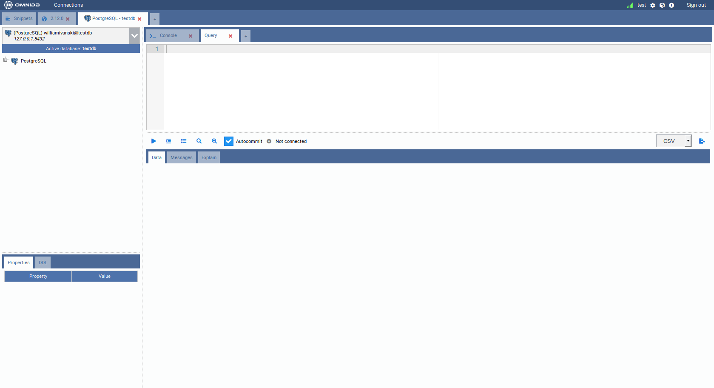
Sections of the Workspace window
This interface has several elements:
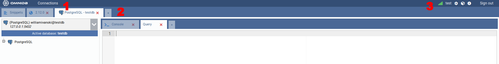
- 1) Connections: Opens a popup with the Connections grid
- 2) Outer Tabs: OmniDB lets you work with several databases at the same time. Each database will be accessible through an outer tab. Outer tabs also can host miscellaneous connection-independent features, like the Snippets feature
- 3) Options: Shows the current user logged in, and if user is a superuser, also shows a link for user management. Also shows links for user settings, installed plugins, query history, information and logout.
Connection Outer Tab
The outer table named PostgreSQL - testdb has this name because of the alias
(PostgreSQL) we put in the connection to the testdb database. This tab is a
Connection Outer Tab. Notice the little tab with a cross besides the
PostgreSQL - testdb outer tab. This allows you to create a new outer tab that
will automatically be a Connection Outer Tab. However, the Snippet Outer Tab
is fixed and will always be the first.
A new Connection Outer Tab will always automatically point to the first connection on your list of database connections. Or, if you clicked on the Select Connection action, it will point to the selected connection. Observe the elements inside of this tab:
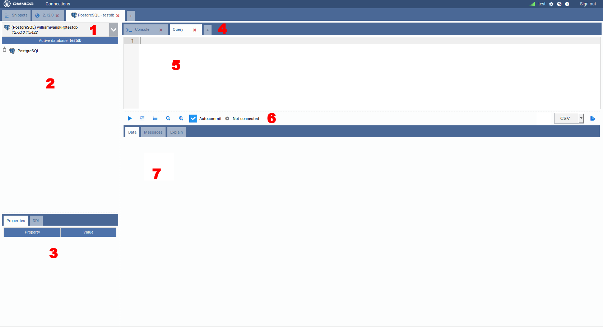
- 1) Connection Selector: Shows all connections and lets the user select the current one
- 2) Tree of Structures: Displays a hierarchical tree where you can navigate through the database elements
- 3) Properties and DDL Panels: Display Properties and DDL about the currently selected node in the tree view
- 4) Inner Tabs: Allows the user to execute actions in the current database. There are several kinds of inner tabs for the current database. By clicking on the last small tab with a cross, you can add a new tab. A new tab can be a Query Tab, Console Tab, Monitoring Dashboard or Backends
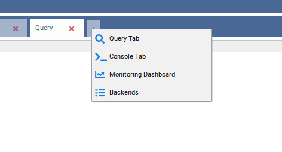
- 5) Inner Tab Content: Can vary depending on the kind of inner tab. The figure shows a Query Tab and in this case the content will be an SQL Editor, with syntax highlight, autocomplete and find & replace
- 6) Inner Tab Actions: Can vary depending on the kind of inner tab. For a Query Tab, they are Run, Indent SQL, Command History, Explain, Explain Analyze, Autocommit and Export to File
- 7) Inner Tab Results: A Query Tab, after you click in the Execute
Button or type the run shortcut (
Alt-Q), will show a grid with the query results in the Data subtab. If the query calls a function that raises messages, those will be shown in the Messages subtab. If instead of Run you clicked in Explain or Explain Analyze, the explain plan for the query will be shown in the Explain subtab.
Working with databases
Take a look at your connections selector. OmniDB always points to the first available connection but you can change it by clicking on the selector.
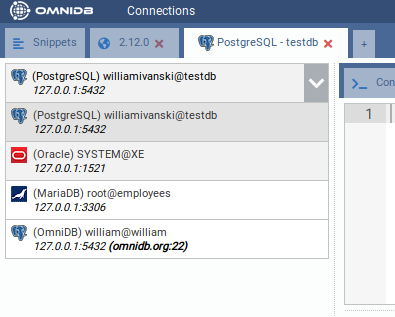
Select the PostgreSQL connection. Now go to the tree right below the selector and click to expand the root node PostgreSQL.
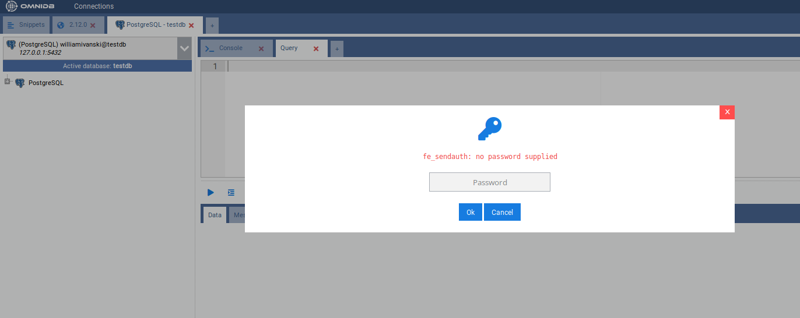
Bear in mind that every 30 minutes you keep without performing actions on the database, will trigger an Authentication popup, meaning that the password that OmniDB has encrypted and stored in memory is now expired. As explained before, this is important for your database security. After you type the correct password, you will see the PostgreSQL node now shows the PostgreSQL version and also was expanded, showing the current database connection and also instance wide elements: Databases, Tablespaces, Roles and Replication Slots.
You can connect to a single PostgreSQL database, and using the same connection you can connect to other databases in the same PostgreSQL instance. The currently active database will be indicated below the connection selector.
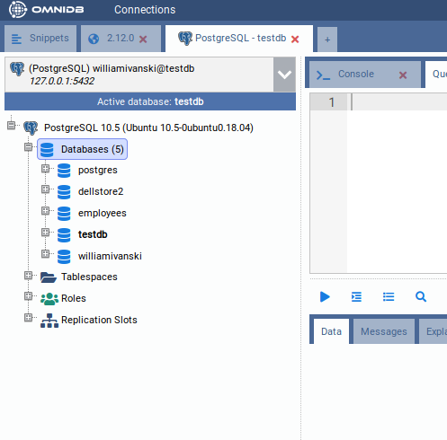
To connect to a different database, expand the node corresponding to that database. A popup will appear asking if you really want to change the active database.
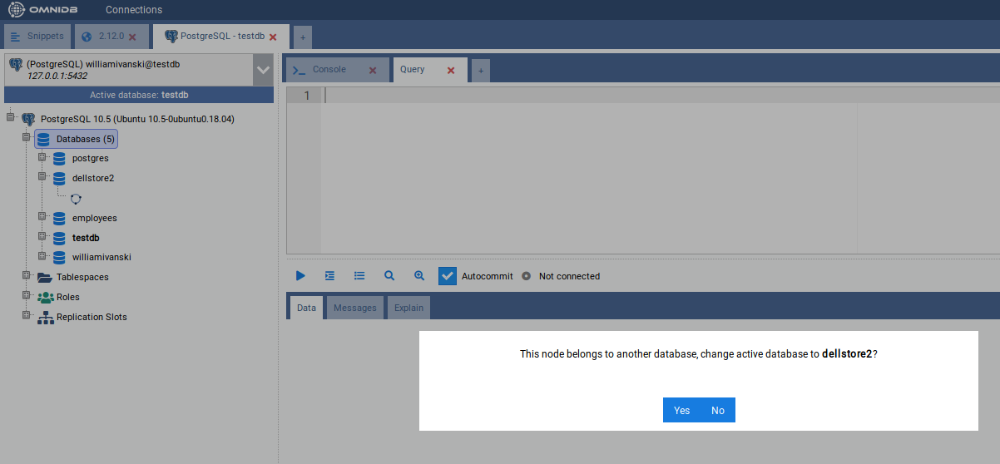
Click on Yes and OmniDB will change the active database to the database you choose. It will be reflected on the Active database indicator, and also on the outer tab name.
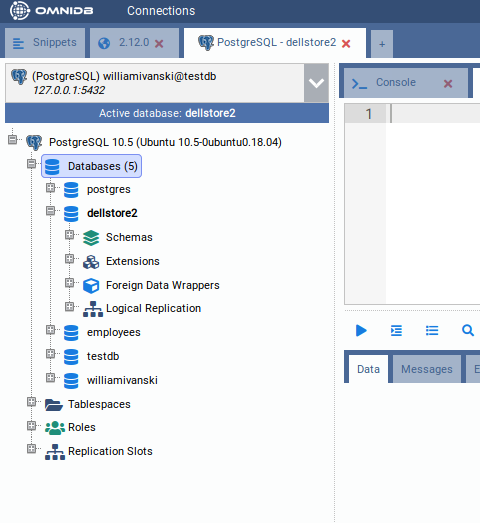
Go ahead and expand the Schemas node. You will see all schemas in the current
database (in case of PostgreSQL, TOAST and temp schemas are not shown).
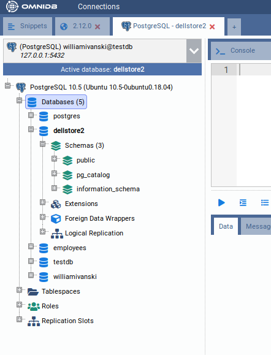
Now click to expand the schema public. You will see different kinds of
elements contained in this schema.
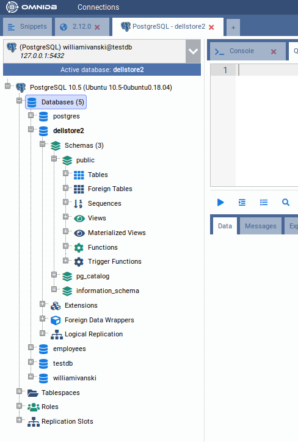
Now click to expand the node Tables, and you will see all tables contained in
the schema public. Expand any table and you will see its columns, primary key,
foreign keys, constraints, indexes, rules, triggers and partitions.
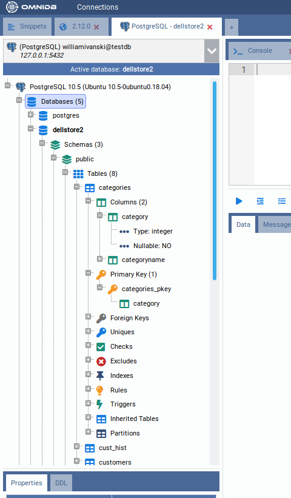
In order to view records inside a table, right click it and choose *Data Actions
Query Data*.
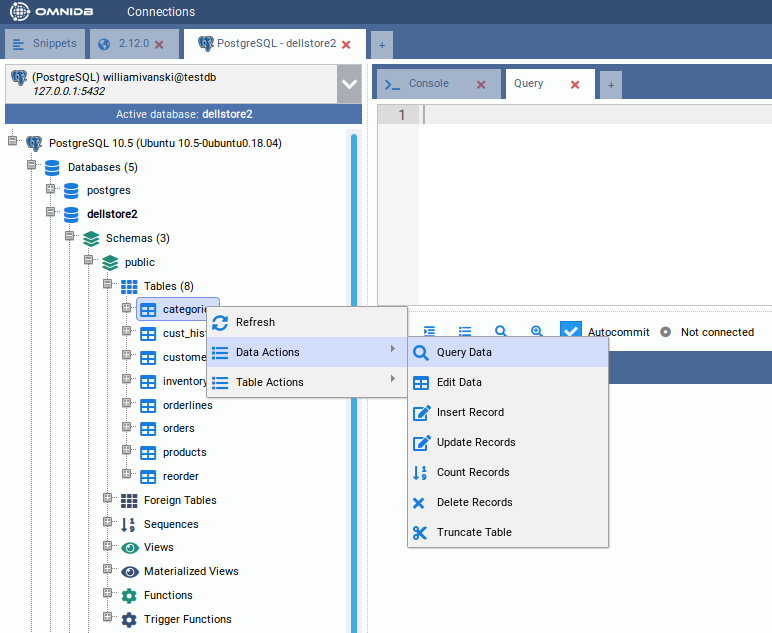
Notice that OmniDB opens a new SQL editor with a simple query to list table records. The records are displayed in a grid right below the editor. This grid can be controlled with keyboard as if you were using a spreadsheet manager. You can also copy data from single cells or block of cells (that can be selected with the keyboard or mouse) and paste on any spreadsheet manager.
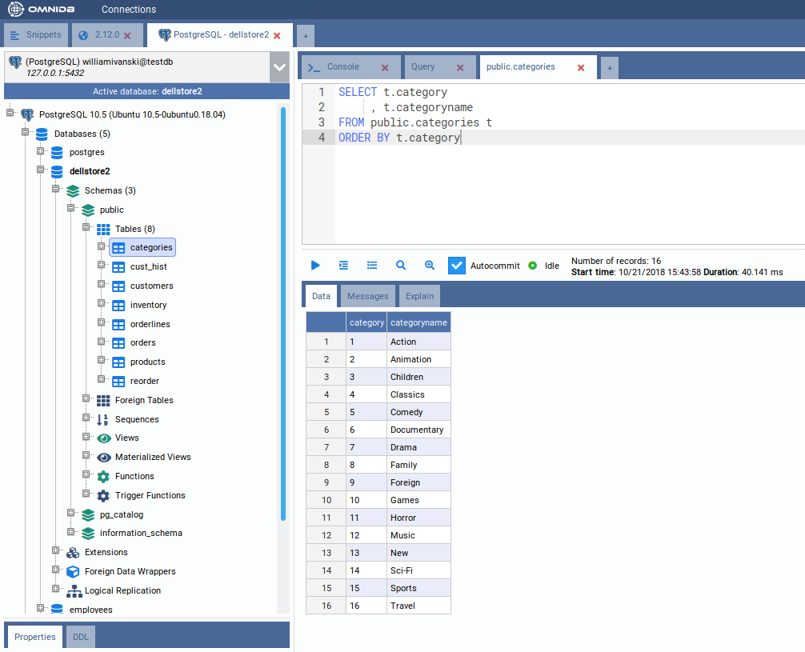
You can edit the query on the SQL editor, writing simple or more complex
queries. To execute, click on the action button or hit the keystroke Alt-Q.
If the results exceed 50 registers, then extra buttons Fetch More and Fetch
All will appear. More details in the next chapters.
Working with multiple tabs inside the same connection
Inside a single connection, you can create several inner query tabs by clicking on the last little tab with a cross, and then choosing Query Tab.
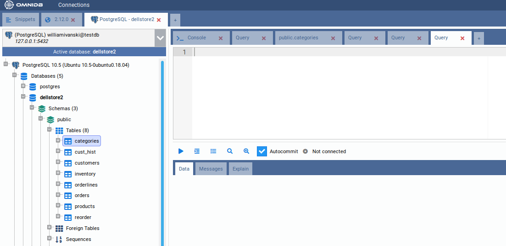
On OmniDB, you can execute several SQL statements and procedures in parallel. When it is executing, an icon will be shown in the tab to indicate its current state. If some process is finished and it is not in the current tab, that tab will show a green icon indicating the routine being executed there is now finished.
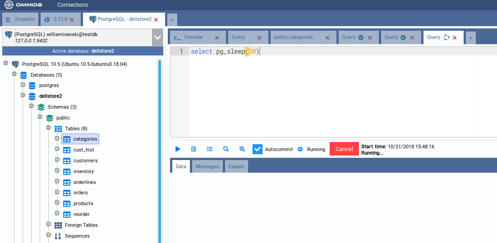
By clicking in the Cancel button, you can cancel a process running inside the database.
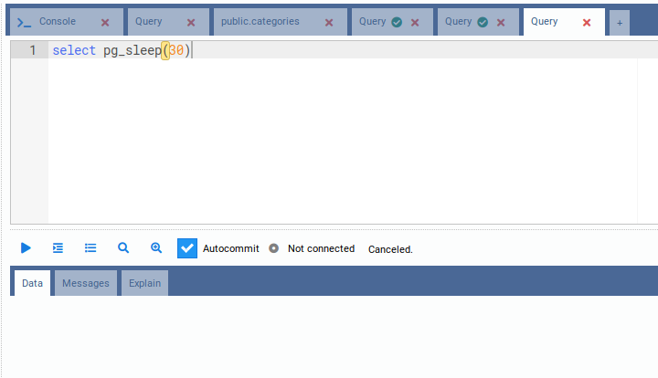
You can also drag and drop a tab to change its order. This works with both inner and outer tabs.
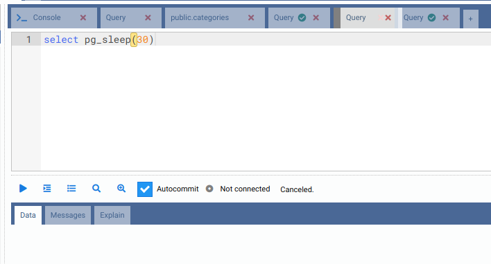
Additionally, you can use keyboard shortcuts to manage inner tabs (SQL Query) and outer tabs (Connection):
- Ctrl-Insert: Insert a new inner tab
- Ctrl-Delete: Removes an inner tab
- Ctrl-<: Change focus to inner tab at left
- Ctrl->: Change focus to inner tab at right
- Ctrl-Shift-Insert: Insert a new outer tab
- Ctrl-Shift-Delete: Removes an outer tab
- Ctrl-Shift-<: Change focus to outer tab at left
- Ctrl-Shift->: Change focus to outer tab at right
Starting from OmniDB version 2.3.0, all SQL Query tabs are automatically saved whenever you execute them. Even if you close OmniDB window or browser tab, they are already stored in OmniDB User Database. They will be automatically restored when you open OmniDB again (if you are using app), open it in another browser window (if you are using server), or even if you clicked in the Connections window or logged out. Removing an outer tab or inner tab by the interface makes it permanently deleted, so it will not be restored.